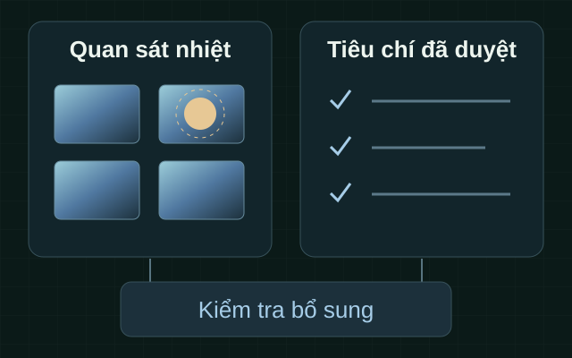

Hồ sơ tình trạng nhiệt
Cần bằng chứng bổ trợ để chuyên gia xem xét nhóm tài sản bảo đảm điện; chưa xác nhận nhu cầu tại khách hàng cụ thể.
S0061 / UAV hồng ngoại · Hỗ trợ bảo trì
Đề xuất bổ sung bằng chứng tình trạng nhiệt và danh mục cần kiểm tra thêm, theo phạm vi tài sản và tiêu chí được chủ quản duyệt. Kết quả dành cho chuyên gia quản lý kỹ thuật xem xét.
S0061 — Kiểm tra nhà máy điện, năng lượng phục vụ quốc phòng bằng UAV cảm biến hồng ngoại. Chưa có năng lực hoặc hiệu quả dịch vụ được xác nhận.
01 / Bài toán cần làm rõ
Các nhu cầu dưới đây là cơ sở nghiên cứu. Phạm vi và mức độ phù hợp tại từng đơn vị cần được xác nhận.
Cần bằng chứng bổ trợ để chuyên gia xem xét nhóm tài sản bảo đảm điện; chưa xác nhận nhu cầu tại khách hàng cụ thể.
Nhãn tài sản và quy tắc ưu tiên phải do chủ quản duyệt trước khi sử dụng kết quả.
Nguồn chính, phụ trợ và dự phòng cần phương pháp phù hợp; quan sát bề mặt không thay thử chức năng.
Tải, điều kiện đo và bề mặt có thể ảnh hưởng so sánh; chỉ sử dụng dữ liệu tương thích.
02 / Phạm vi giải pháp
S0061 đề xuất dùng UAV và cảm biến hồng ngoại để thu thông tin nhiệt bề mặt phù hợp trong danh mục được phép. RGB bổ trợ đối chiếu hiện trạng; dữ liệu radiometric được xem xét khi mục tiêu cần định lượng.
Thông tin được tổ chức thành hồ sơ điều kiện, QA, quan sát theo nhãn tài sản và danh mục cần kiểm tra thêm. Phạm vi ưu tiên nguồn điện do quốc phòng sở hữu hoặc quản lý; nguồn ngoài chỉ khi quan hệ phục vụ và quyền kiểm tra được xác nhận.

Chuyên gia xem xét quan sát nhiệt cùng điều kiện đo và kết quả đối chứng.
Danh mục và quy tắc chủ quản giúp tổ chức hồ sơ phục vụ quản lý kỹ thuật.
So sánh giữa kỳ hoặc trước–sau bảo trì khi dữ liệu và điều kiện tương thích.
03 / Phương pháp & năng lực đề xuất
Thông tin dưới đây mô tả hướng nghiên cứu và điều kiện sử dụng. Chưa xem là cấu hình hoặc hiệu năng GASCOLAE đã được nghiệm thu.
Quan sát bề mặt của tài sản phù hợp, được duyệt. Không đo nhiệt độ bên trong; cần đánh giá khả năng sử dụng UAV tại từng vị trí.
Cần dữ liệu gốc, phần cứng phù hợp, hiệu chuẩn và điều kiện đo; ảnh tô màu không đủ.
Ảnh nhìn thấy bổ trợ cho quan sát; RGB không thay dữ liệu hồng ngoại.
Xem xét điều kiện, chất lượng và giới hạn dữ liệu; không tự chẩn đoán nguyên nhân hỏng.
Áp dụng nhãn và quy tắc được chủ quản duyệt để hỗ trợ chuyên gia xem xét bảo trì.
Chỉ dữ liệu tương thích và được phép; chưa có hiệu quả hoặc năng lực phân tích GASCOLAE được xác nhận.
Giới hạn cần đọc cùng kết quả. Hồ sơ nhiệt hỗ trợ chuyên gia xem xét, không thay kiểm tra điện–cơ khí, kiểm định an toàn hoặc chứng nhận khả năng cấp điện. PV chỉ bổ trợ nếu có trong phạm vi được duyệt.
04 / Tình huống sử dụng
Các tình huống là đề xuất trong tài liệu nghiên cứu. Đầu ra và quyền triển khai cần được xem xét riêng.
Nhóm tài sản được chủ quản duyệt cần theo dõi thông tin tình trạng.
Hồ sơ nhiệt bề mặt, QA và quan sát phục vụ quản lý kỹ thuật.
Bổ sung quan sát nhiệt bề mặt khi phù hợp và được phép.
Danh mục cần kiểm tra thêm; không thử khởi động, chuyển nguồn hoặc xác nhận khả năng cấp điện.
Gắn quan sát với nhãn tài sản và quy tắc do chủ quản phê duyệt.
Danh mục để chuyên gia xem xét; không tự suy mức trọng yếu hoặc ra lệnh sửa chữa.
Sử dụng dữ liệu được phép với điều kiện đo tương thích.
Hồ sơ biến đổi cần kiểm chứng; không chứng nhận phục hồi chức năng hoặc sẵn sàng nhiệm vụ.
05 / Quy trình ở mức khái niệm
Lộ trình giúp hiểu cách tổ chức hồ sơ và điều kiện chuyển bước. Đây không phải hướng dẫn vận hành hoặc bằng chứng đã triển khai.
Chủ quản xác nhận quan hệ thuộc hoặc phục vụ quốc phòng và thẩm quyền sử dụng kết quả.
Xác định nhóm tài sản, bề mặt, mục tiêu định tính hoặc định lượng và nhãn được duyệt.
L1 D1–D4 làm rõ khả thi, chất lượng, quyền sử dụng và các nội dung còn mở.
Phạm vi, kỹ thuật, an toàn, dữ liệu và các cấp L2/L3 cần được xem xét riêng.
Chỉ sau phê duyệt: dữ liệu được phép, kiểm soát chất lượng và đối chứng chuyên gia.
Hồ sơ và danh mục kiểm tra thêm được bàn giao đúng người nhận, quyền lưu giữ và sử dụng.
06 / Lộ trình & đầu ra
L1, L2 và L3 là lộ trình đề xuất, chưa phải các gói thương mại được phê duyệt. Mỗi bước có đầu ra và điều kiện riêng.
D1–D4 · Hồ sơ đề xuất
Làm rõ mục tiêu và phạm vi nguồn điện phục vụ quốc phòng, phương pháp và cách dùng kết quả. Không mặc định có dữ liệu thực địa.
Quan hệ quốc phòng, mục tiêu bảo đảm điện và tài sản, phương pháp dự kiến.
Điều kiện theo cơ sở và công việc; hồ sơ không phải giấy phép.
Radiometric, QA, đối chứng, nhãn tài sản, quy tắc ưu tiên và báo cáo cần duyệt.
14 nội dung G1–G14 và bằng chứng cần bổ sung; chưa được xác nhận hoàn tất.
Đầu ra dự kiến · Chưa thực hiện
Kiểm chứng dữ liệu nhiệt, QA và mẫu báo cáo theo tiêu chí chủ quản sau phê duyệt riêng.
Đánh giá dữ liệu, đối chứng và giới hạn theo phương pháp được duyệt.
Chỉ thông tin được phép, chưa có dữ liệu hoặc kết quả S0061 đã thực hiện.
Đầu ra dự kiến · Chưa nghiệm thu
Hồ sơ nhiệt và báo cáo hỗ trợ bảo trì nguồn điện theo mục tiêu, phạm vi và hợp đồng được duyệt.
IR, RGB bổ trợ, radiometric nếu có cùng điều kiện và QA.
Quan sát theo nhãn được duyệt để chuyên gia đối chứng.
Theo tiêu chí và quyền nhận; không kết luận hỏng hoặc thay lệnh bảo trì.
Phạm vi thương mại cần được Sales/Finance xem xét riêng. Hồ sơ hiện chưa xác nhận giá, thời hạn thực hiện hoặc SLA.
07 / Câu hỏi thường gặp
Câu trả lời theo nội dung nghiên cứu S0061. Các nội dung chưa xác minh cần người phụ trách có thẩm quyền xem xét.
Chưa. L1–L3 là lộ trình đề xuất, năng lực và quyền triển khai chưa được xác nhận. Tất cả use case chưa có pilot S0061.
Không. Ưu tiên nhà máy do quốc phòng sở hữu hoặc quản lý; nguồn ngoài chỉ khi quan hệ phục vụ và quyền kiểm tra được xác nhận.
Không. Đây là quan sát nhiệt bề mặt, cần xét điều kiện, QA và đối chứng chuyên gia; không thay kiểm tra điện–cơ khí hoặc kiểm định an toàn.
Khi mục tiêu cần định lượng, phải xem xét dữ liệu, phần cứng, hiệu chuẩn và kiểm soát điều kiện phù hợp. Ảnh tô màu hoặc RGB không đủ làm căn cứ định lượng.
Không. UC2 chỉ đề xuất quan sát nhiệt bề mặt khi phù hợp và được phép, nhằm xác định hạng mục cần kiểm tra thêm; không thử chức năng cấp điện.
Không. Nhãn và quy tắc do chủ quản duyệt; chuyên gia xem xét cách sử dụng. Kết quả không tự xác nhận an toàn hoặc sẵn sàng nhiệm vụ.
D1–D4 là hồ sơ L1. L2/L3 có đầu ra dự kiến và cần phê duyệt riêng; chưa có dữ liệu hoặc kết quả đã thực hiện.
Trang không có biểu mẫu hoặc upload. Chủ quản cần duyệt kênh, người nhận và loại dữ liệu trước tiếp nhận; nội dung thương mại do Sales/Finance xem xét.
08 / Trạng thái hồ sơ
14 nội dung cần xác minh còn mở, bao gồm đối tượng, phương pháp, chất lượng dữ liệu, đầu ra và quyền công bố. Hồ sơ chưa xác nhận hiệu quả bảo trì hoặc năng lực triển khai.
Trao đổi với người phụ trách dự án qua kênh nội bộ được phép. Thông tin liên hệ và kênh tiếp nhận sẽ được bổ sung sau khi hồ sơ được duyệt.
Xem lại đầu ra dự kiếnNội dung trang được biên tập từ Landing Page Content phiên bản 1.0 trong bộ tài liệu S0061; không bổ sung tuyên bố hiệu năng hoặc dự án đã thực hiện.
Danh tính và phạm vi: mục A, 1–3. Nhiệt/QA và ứng dụng: mục 5–6. Lộ trình và D1–D4: mục 7–9. Giới hạn nguồn và G1–G14: mục 15. Nhiệt dân dụng và mục tiêu quốc phòng là hai lớp bằng chứng riêng; chưa chứng minh triển khai S0061 tương đương.